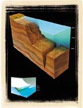
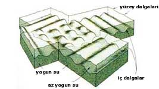

DENÝZLERDEKÝ KARANLIK VE ÝÇ DALGALAR
“Ya
da (inkar edenlerin amelleri) engin bir denizdeki karanlýklara benzer;
onun üstünü bir dalga kaplar, onun üstünde bir dalga, onun da üstünde bir
bulut vardýr. Bir kýsmý bir kýsmý
üzerinde
olan karanlýklar; elini çýkardýðýnda onu bile neredeyse göremeyecek. Allah
kime nur vermemiþse, artýk onun için nur yoktur.„
(Nur Suresi, 40)
Derin denizlerdeki genel ortam "Oceans" adlý kitapta þu þekilde tanýmlanmaktadýr:
Bugün biliyoruz ki, derin denizlerdeki ve okyanuslardaki karanlýk, yaklaþýk olarak 200 m. ve daha derin yerlerde olur. Bu derinlikte, hemen hemen hiç ýþýk yoktur. 1000 m.'nin altýndaki derinliklerde ise artýk hiçbir þekilde ýþýða rastlamak mümkün deðildir.Günümüzde bir denizin genel coðrafi yapýsý, içinde yaþayan canlýlarýn özellikleri, tuzluluk oraný gibi bilgilerin yanýsýra içerdiði su miktarý, yüzölçümü ve derinliði gibi bilgileri de edinmek mümkündür. Günümüz teknolojisi kullanýlarak üretilmiþ olan denizaltý gibi araçlar ve çeþitli özel aletler bu bilgilere ulaþmakta kullanýlan en önemli aracýdýrlar.
 Günümüz teknolojisi ile yapýlan ölçümlere göre Güneþ ýþýðýnýn %3-30'u deniz yüzeyinde yansýtýlýr. Ýlk 200 metredeyse ýþýk spekturumunun mavi ýþýðý en son olmak üzere 7 rengin tümü ardý ardýnca emilir.1000 m'nin altýndaki derinliklerde ise artýk hiçbir þekilde ýþýða rastlamak mümkün deðildir.Bu bilimsel gerçeðe 1400 yýl önce Kuran-ý Kerim'in Nur Suresi'nde, 40. ayetinde dikkat çekilmiþtir. |
Bir
insanýn bu aletler olmadan 40 m.'den daha derine dalmasý ise neredeyse
imkansýzdýr. Bununla birlikte bir insanýn yardýmsýz olarak okyanuslarýn
200 m. civarýndaki karanlýk derinliklerinde yaþamasý da kesinlikle mümkün
deðildir. Bu nedenle bilim adamlarý denizler hakkýndaki detaylý bilgileri
çok yakýn zamanlarda keþfetmiþlerdir. Oysa Nur Suresi'ndeki ayette geçen
"engin denizlerin karanlýk" olduðu ifadesi bundan 1400 sene önce haber
verilmiþtir. Hiçbir teknolojinin dolayýsýyla insanlarýn denizlerin derinliklerine
dalacak araçlarýnýn olmadýðý bir dönemde böyle bir bilginin verilmiþ olmasý
elbette Kuran mucizelerinden biridir.
Bununla birlikte Nur Suresi'nin 40. ayetinde belirtilen "…engin bir denizdeki karanlýklara benzer; onun üstünü bir dalga kaplar, onun üstünde bir dalga, onun da üstünde bir bulut vardýr…" ifadesi de Kuran'daki baþka bir bilimsel mucizeye iþaret etmektedir: Bilim adamlarý yakýn zamanda "farklý yoðunluktaki katmanlar arasýnda yoðunluk ara yüzlerinde meydana gelen iç dalgalar"ýn olduðunu bulmuþlardýr. Ýç dalgalar deniz ve okyanuslarýn derinliklerini kaplar çünkü derin denizlerin, üzerlerindeki sudan daha fazla yoðunluklarý vardýr. Ýç dalgalar yüzey dalgalarý gibi davranýr. Yüzey dalgalarý gibi onlar da kýrýlabilir. Ýç dalgalar, insan gözüyle görülemez ancak belirli bir bölgedeki sýcaklýk ve tuzluluk deðiþiklikleri incelendiðinde bu dalgalar fark edilebilir. |
